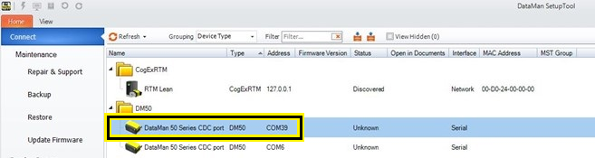
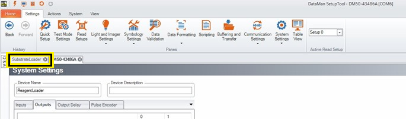
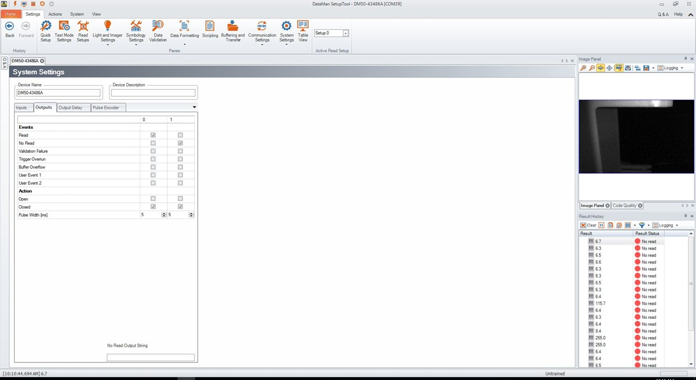
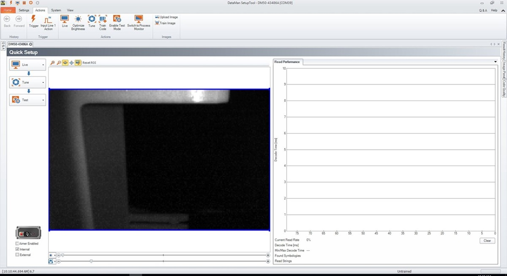

Press the
Windows key and select
File Explorer to open File Explorer.
Go to
C:\Program Files (x86)\Cognex\DataMan\DataMan Software.
Double-click
Setup Tool.exe to open the Cognex DataMan Setup Tool.
Step 2: Identify the Barcode Reader Cameras
On the Home tab select
Connect.
Expand the
DM50 folder. The folder should list two items that include a yellow camera icon. The items will likely be named DataMan 50 Series CDC Port, but they might display the name USB Serial Device, instead.
Figure 241:

Double-click the first item in the list to open Quick Setup view for the device.
If the tab for the Quick Setup view displays the name ReagentLoader or SubstrateLoader, close the tab and double-click the second item listed in the DM50 folder. If the tab for that Quick Setup view displays the second of the two names, proceed to
Step 4: Trigger the Camera. Otherwise, proceed to
Step 3: Name the Barcode Reader Camera.
Figure 242:

Step 3: Name the Barcode Reader Camera
Select the
Settings tab to view System Settings.
Figure 243:

In the
Device Name box, type the name of the camera using "camel case" capitalization, without spaces, exactly as follows:
SubstrateLoader
ReagentLoader
Step 4: Trigger the Camera
On the Actions tab select
Trigger to view the display for the selected device. The image below shows what you will see on the display for the substrate loader camera.
Figure 244:

Press
Enter. The message
The changes made require reboot to take effect will be displayed in the upper-right corner of the display area for the tab.
Select the triangle adjacent to the message to restart the device. (If no triangle appears, click anywhere on the screen.) A dialog with the notification
Current configuration will be saved to the reader will be displayed.
Select
OK.
Step 5: Verify the Camera Name
On the Home tab and select
Connect.
Expand the
DM50 folder.
Verify the name listed for the device in the DM50 folder is correct. Repeat these steps until the following two devices have been configured.